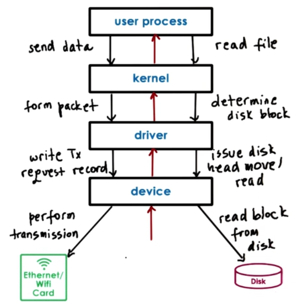

I/O Management
Operating system
- Has protocols
- Interfaces for device I/O
- Has dedicated handlers
- Device drivers, interrupt handlers
- Decouple I/O details from core processing
- abstract I/O device detail from applications
I/O Device Features
- Control registers (accessed by CPU)
- Command
- Data Transfers
- Status
- Microcontroller : device's CPU
- On device memory
- Other logic
- e.g. analog to digital
Device drivers
- per each device type
- responsible for device access management and control
- provided by device manufacturers per OS /version
- each OS standardizes interfaces
- device independence
- device diversity
Types of devices
- Block
- e.g. disk
- read/write blocks of data
- direct access to arbitrary block
- Character
- e.g. keyboard
- get/put character
- Network devices
OS representation of a device : special device file
UNIX like systems:
- /dev
- tmpfs
- devfs
Linux supports a number of pseudo "virtual" devices that provide special functionality to a system.
CPU device interactions

access device registers : memory load/store
- Memory mapped I/0
- part of 'host' physical memory dedicated for device interactions
- Base Address Registers (BAR)
- I/O Port
- dedicated in low instructions for device access
- target device (I/0 port) and value in register
Path from Device to CPU
- Interrupt
- Overhead: Interrupt handling steps
- +: Can be generated as soon as possible
- Polling
- Overhead: Delay or CPU overhead
- when convenient for OS
Device access : Programmed I/O (PIO)
- No additional hardware support
- CPU "programs" the device
- via command registers
- data movement
- E.g. NIC(Network Interface Card)
- data = network packet
- Write command to request packet information
- Copy packet to data registers
- Repeat until packet sent
E.g. 1500B packet; 8 byte registers or bus => 1(for bus command) + 188(for data) = 189 CPU store instructions
Direct Memory Access (DMA)
- Relies on DMA controller
- CPU "programs" the device
- via command registers
- via DMA controls
- E.g. NIC (data = network packet)
- Write command to request packet information
- Configure DMA controller with in memory address and size of packet buffer
E.g. 1500B packet; 8 byte registers or bus => 1(for bus command) + 1(for DMA configuration) = total 2 CPU store instructions. Less steps, but DMA configuration is more complex.
For DMAs - data buffer must be in physical memory until transfer completes - pinning regions (non-swappable)
Typical Device Access

- System call
- In-kernel stack
- Driver Invocation
- Device request configuration
- Device performs request
OS bypass

- device registers/data
- directly available
- OS configures
- then gets out of the way
- "user level driver"
- in library
- OS retains coarse-grain control
- relies on device features
- sufficient registers
- demux capability
What happens to a calling thread?

- Synchronous I/O operations
- process blocks
- Asynchronous I/O operations
- process continues
- Later, process checks and retrieves result
- OR
- process is notified that operation is completed and results are ready
Block Device Stack
Block device typical storage for files:

- processes use files => logical storage unit
- kernel file system (KFS)
- where how to find and access file
- OS specifies interface
- generic block layer
- OS standardized block interface
- Device driver
Virtual File System

Virtual File System Abstractions
- File : Elements on which the VFS operates
- File Descriptor : OS representation of file
- open, read, write, send file , lock, close
- inode : Persistent representation of file "index"
- list of all data blocks
- device, permissions, size
- dentry : Directory entry, corresponding to the single path component,
- dentry cache
- super block : file system specific information regarding the File System layout
VFS on disk
- File : data blocks on disk
- inode : track file blocks
- also resides on disk in some block
- super block : overall map of disk blocks
- inode blocks
- data blocks
- free blocks
Inodes
Index of all disk blocks corresponding to a file
- File : identified by inode
- inode : list of all blocks + other metadata
+: Easy to perform sequential or random access
-: Limit on file size
Inodes with indirect pointers
- Index of all disk blocks corresponding to a file
- Index contain:
- metadata
- pointers to blocks
- Direct pointer : Points to data block
- 1 KB per entry
- Indirect pointer : Points to block of pointers
- 256 KB per entry
- Double Indirect pointer : Points to block of block of pointers
- 64 MB per entry
+: Small inode => large file size
-: File access slowdown
Disk access optimizations
Reducing file access overheads
- Caching/buffering : reduce number of disk accesses
- buffer cache in main menu
- read/write from cache
- periodically flush to disk - fsync()
- I/O scheduling : reduce disk head movement
- maximize sequential vs random access
- Prefetching : increases cache hits
- leverages locality
- Journaling/logging: reduce random access (ext3, ext4)
- "describe" write in log : block, offset, value..
- periodically apply updates to proper disk locations